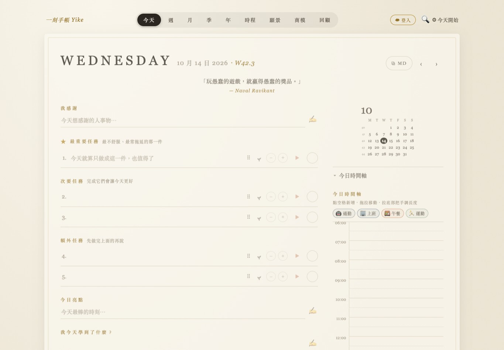
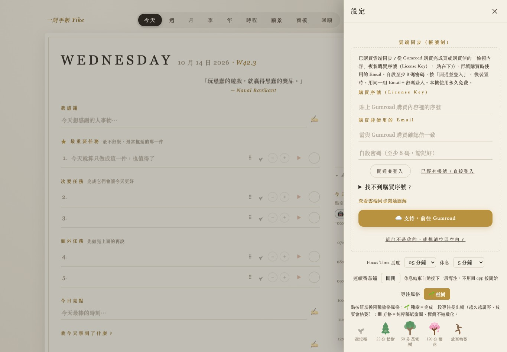
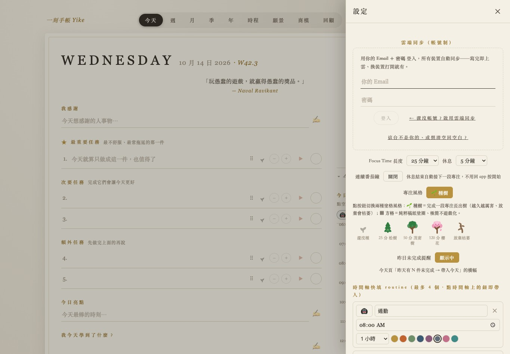

1從購買信「開通教學與購買序號」取得 License Key
- 打開 Gumroad 購買完成頁，或購買後收到的收據。
- 點「開通教學與購買序號」（部分頁面顯示「檢視內容／View content」），在內容頁找到 License Key。
- 複製這組序號，稍後貼入一刻手帳的購買序號欄。
找不到收據或序號時，請聯絡客服核對購買資料，不需要再買一次。
2打開一刻手帳，點右上「☁ 登入」
用手機的 Safari、Chrome，或電腦瀏覽器開啟 yikeday.com。第一次開啟若看到歡迎畫面，先按 開始寫今天 →，再點右上角 ☁ 登入。它會打開「設定」裡的「雲端同步（帳號制）」。
手機排版可能不同；也可點「設定」，找到「雲端同步」。

3填購買序號、購買 Email 和密碼，再按「開通並登入」
- 購買序號：貼上剛從 Gumroad 內容頁複製的 License Key。
- Email：填購買時使用的 Email，需與 Gumroad 購買確認信一致；之後各裝置都使用同一個。
- 密碼：自己設定至少 8 碼，並自行保存。
- 按 開通並登入，等候畫面回應。
- 看到「開通成功」並顯示「已同步」，才確認開通完成。
第一次開通需要購買序號：只有購買 Email 不能設定新帳號密碼。若先前收到免序號教學，請改從 Gumroad 購買內容取得 License Key。雲端同步不需要 OpenAI API key。

4已有帳號或換裝置，用同一組帳密登入
- 在另一台裝置開啟一刻手帳，點右上角 ☁ 登入。
- 選 已經有帳號？直接登入。
- 填入開通時的同一個 Email 和密碼。
- 按 登入，確認顯示「已同步」。
不需要重新設定帳號，也不用為了另一台裝置再購買一次。

遇到問題時
找不到序號，或序號無法使用
先從 Gumroad 購買完成頁或收據點「開通教學與購買序號」（或「檢視內容」），核對 License Key 是否完整複製。若已付款仍無法取得序號或開通，請聯絡客服，附購買確認信與錯誤畫面，請客服核對。
先前收到的教學說序號可留空
新帳號需使用購買序號和購買 Email 開通。請改從 Gumroad 購買內容取得 License Key；若找不到，請聯絡客服核對。已開通的帳號仍可使用原本的帳密登入。
顯示已註冊，或忘記原本的密碼
已註冊的帳號請改用「已經有帳號？直接登入」，填原本的帳密。忘記密碼時請聯絡客服詢問處理方式。
另一台裝置看不到資料
確認兩台都使用同一個 Email，並顯示「已同步」。若仍有問題，保留原本的手帳資料與錯誤畫面，再聯絡客服。
遇到錯誤時不用重新付款。客服可核對購買 Email、購買確認信與錯誤截圖；不用提供密碼，截圖也請勿露出密碼。
客服：qqleveragelearning@gmail.com
打開一刻手帳 →